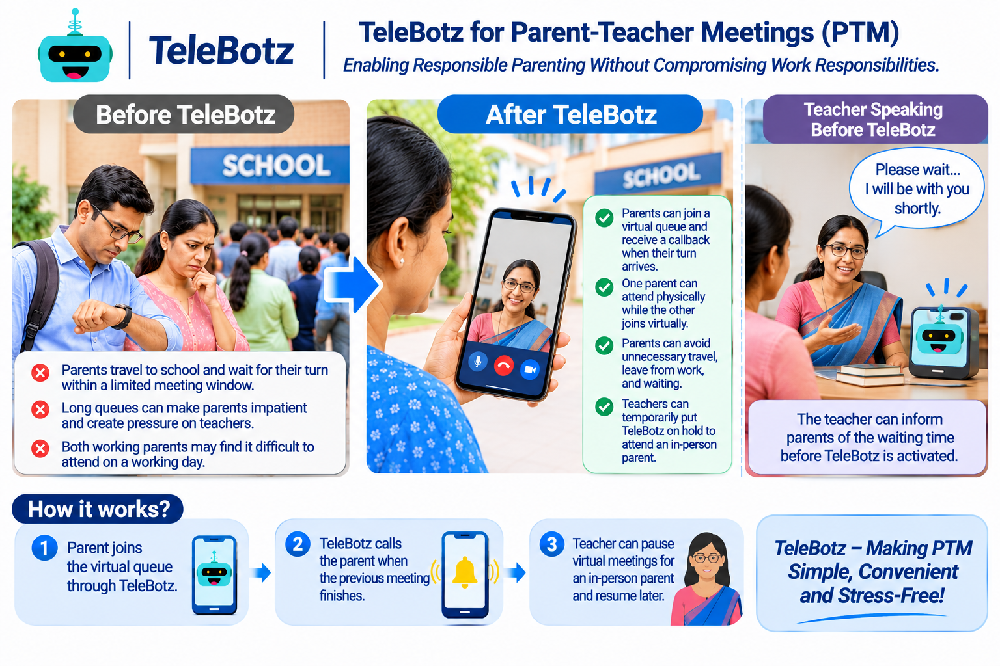

Parents lose time travelling and waiting
Parents may need to take time away from work, reach school, and wait until their turn comes during a busy meeting schedule.
Enabling responsible parenting without compromising work responsibilities.
Give parents another way to connect with teachers through virtual queues, callbacks, and flexible in-person or virtual participation.

Parent-teacher meetings are often scheduled on working days and within a limited time window. Parents may need to travel and wait, while teachers must balance a steady stream of conversations with the time available for each family.
Parents may need to take time away from work, reach school, and wait until their turn comes during a busy meeting schedule.
As the crowd grows, waiting parents can become impatient and teachers may feel pressured to shorten conversations.
It may be difficult for both parents to attend in person on a working day. Often, only one parent can make the visit.
Teachers may need to alternate between parents waiting virtually and those who have come to school in person.
TeleBotz adds a virtual channel alongside the usual in-person meeting. Parents can join a queue remotely, receive a callback when their turn arrives, and participate in a way that better fits their circumstances.
Parents join the queue through TeleBotz and receive a call when the previous meeting finishes and their turn is ready.
One parent can attend at school while the other joins the conversation virtually through TeleBotz.
When a parent is physically present, the teacher can put the virtual TeleBotz session on hold, attend in person, and resume virtual meetings when ready.
Parents can take part remotely when appropriate, reducing avoidable travel, time away from work, and physical waiting.
The parent uses TeleBotz to enter the virtual queue for the teacher's PTM session.
When the previous conversation ends and the teacher is available, the next parent receives a callback.
The teacher can pause virtual calls to attend a parent who is physically present, then resume the virtual queue.
The parent joins the conversation remotely, or participates virtually while another parent is present at school.
The callback and queue experience depends on the TeleBotz deployment, teacher availability, network connectivity, and the school's meeting process. TeleBotz is intended to complement in-person PTMs and give schools another channel for parent participation.
Let's explore how a virtual queue and callback-based PTM workflow could fit your school's meeting schedule.
Discuss this use case